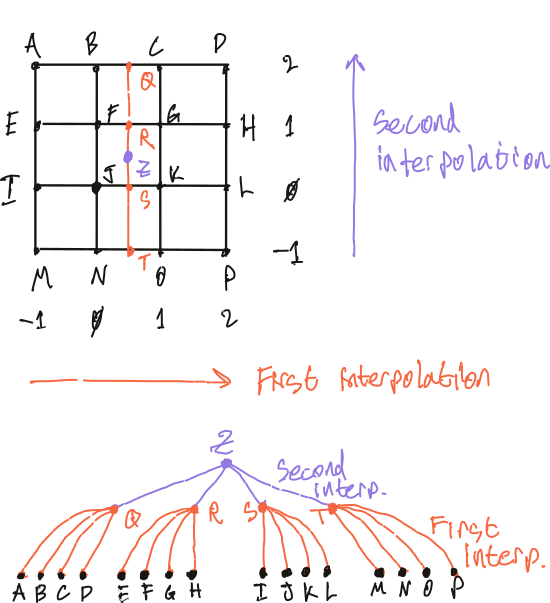
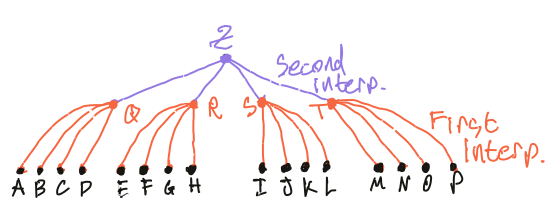

2025-11-10 InterpN: Fast Interpolation
InterpN is a low-latency numerical interpolation library for realtime and bare-metal embedded systems, written in Rust. It remains the first and only of its kind in this domain.
Because of the performance constraints of a bare-metal target, InterpN has achieved excellent application-level throughput and found use in scientific computing via the Rust crate and Python bindings.
Results
InterpN achieves up to 200x speedup over the state of the art (Scipy) for N-dimensional interpolation.
Similar speedups are obtained for large batch inputs, with more modest (about 10x) speedups for cubic methods.
These benchmarks graciously exclude the cost of initialization of Scipy's methods, which allocate, do a linear solve, and perform other preparation during initialization.
By contrast, InterpN can be called directly on a reference to the data at any time with no initialization penalty.
Finally, InterpN produces about 8 orders of magnitude less floating-point error than Scipy.
Motivation
Interpolation is one of the most common tasks in scientific computing and realtime/embedded systems.
Between these two domains, usage falls into two broad categories
- Small batch / low latency (optimization, realtime, embedded)
- Large batch / high throughput (visualization, fluid/material property lookups, grid data remapping)
InterpN targets the first category, but excels in both.
The Algorithm
The combination of low latency, high throughput, and bare-metal compatibility is achieved through a (bounded) recursive algorithm.
The concept itself is easy: do 1D interpolation on one axis at a time.
After visiting each of the N dimensions, you arrive at the final interpolated value.
The trick to making it efficient is to formulate the data access as a tree of depth N instead of as an N-cube:

This method extends to higher dimensions by deepening the tree, and applies to linear as well as cubic methods by changing the degree of the tree and the 1D interpolation kernel.
This algorithm is vaguely related to the recursive de Casteljau's algorithm and de Boor's algorithm. In practice, it looks nothing like either one and shares no implementation details.
The 1D cubic spline evaluation uses Horner's method to minimize the total number of FLOPs and roundoff events.
In an earlier post, I tabled the recursive algorithm to avoid heap allocation. Since then, more careful thought resulted in the tree formulation.
Performance Hygiene
There are some things we can do to improve performance without touching the code.
These settings will be used when building your crate directly as a binary, Python extension library, or similar.
Optimizations, codegen-units, and LTO
First, configure the release profile in Cargo.toml.
[profile.release]
codegen-units = 1 # Optimize the whole crate together
lto = true # Reduces binary size + small speedup
overflow-checks = true # Free reliability!
x86 Instruction Sets
Next, configure compiler flags in .cargo/config.toml.
By default, rustc targets CPUs from 2001. For both scientific computing and realtime systems, it's fair to target newer machines.
To target about 2008 onward,
[target.'cfg(any(target_arch = "x86_64", target_arch = "x64"))']
rustflags = ["-C", "target-feature=+fma"] # incl. SSE4 and AVX
Or, for about 2013 onward,
[target.'cfg(any(target_arch = "x86_64", target_arch = "x64"))']
rustflags = ["-C", "target-feature=+avx2,+fma]
In a few years, when AVX512 (released 2016) has become more common, this list might look like
[target.'cfg(any(target_arch = "x86_64", target_arch = "x64"))']
rustflags = ["-C", "target-feature=+avx2,+fma,+avx512f]
These settings allow rustc to produce modern vector (SIMD) instructions for x86 processors. The rustc documentation contains the full list of available x86 instruction sets.
Next, we'll look at how to write code to use these for massive speedups.
Vectorization Two Ways
Now that we've got vector instructions, let's use them.
Primer
As a brief primer on vectorization: the term refers to the use of SIMD (single instruction multiple data) aka vector instructions to perform multiple float operations at once independent of threading. Vectorization is associated with the benefit of reading from sequential and/or cache-lane-aligned memory addresses for efficient reads from RAM, although in a strict sense, this is a distinct benefit of the patterns used to produce vector instructions. The combined effect of both is typically a 5-10x speedup.
Nick Wilcox's auto-vectorizer tutorial is an excellent recipe for what I'll call "Type 1" vectorization.
- Type 1 (numpy, ndarray etc): simple loops performing one operation on each datum
- Type 2 (InterpN): complex loops performing as many operations as possible on each datum
Both methods rely on the autovectorizer and require careful elimination of bounds checks.
Eliminating Allocation
For example, take the expression a = b * c^2; d = b^2 + c^3; e = a + d;.
In a Type 1 vectorized approach,
// With ndarrays b, c
let a = b * c.powi(2); // Allocates 2 times
let d = b.powi(2) + c.powi(3); // Allocates 3 times
let e = a + d; // Allocates again
Each individual operation is well-vectorized and readable, but
- ⚠️ This produces slow traffic back-and-forth to RAM
- ⚠️ Extra allocations increase latency and total RAM usage
- ⚠️ The compiler and CPU can only optimize one operation at a time
c^2is not reused between the calculation ofaanddb^2won't be pipelined alongsidec^2- ...and so on. Even for such a small expression, there are many missed optimizations!
- ⚠️ Bounds checks are repeated for each operation
A Type 2 approach would look like this:
// With slices b, c
assert!(b.len() == c.len()) // Pull bounds check forward
let mut e = vec![0.0; b.len()]; // Allocate once
// Unidiomatic, but we checked bounds, so it's OK to index.
for i in 0..e.len() {
let (bi, ci) = (b[i], c[i]);
let a = bi * ci * ci;
let d = bi * bi + ci * ci * ci;
e[i] = a + d;
}
and produces higher overall throughput by resolving all those issues.
- ✅ Minimum possible RAM accesses and heap allocations
- ✅ Compiler automatically reuses duplicate values
- ✅ CPU can execute independent operations concurrently without threading
- ✅ Bounds checks are only performed once
- ✅ Compiler generates vector instructions
- Both spanning sequential indices and within the scalar expression
Finally, to produce a Type 2 pattern, we don't actually write down the entire scalar expression in a loop like that example. Instead, we can simply rely on inlining to do it for us.
// ...
#[inline]
fn my_expr(b: f64, c: f64) -> f64 {
let a = b * c * c;
let d = b * b + c * c * c;
e[i] = a + d;
}
// ...
for i in 0..e.len() {
e[i] = my_expr(b[i], c[i]);
}
Careful Branching & Cache-Locality
InterpN defers between 7 distinct cases for cubic interpolation:
out out
---|---|---|---|---|---|--- Grid
2 2 3 3 3 2 2 Order of interpolant between grid points
1 1 Extrapolation with linearize_extrapolation
This is enabled by a conspicous benefit of the Type 2 pattern: robustness to branching in the loop.
In a Type 1 pattern, branches in the loop disrupt autovectorization,
cause cache misses, and obliterate performance. This drives implementations
like Scipy's pchip to pre-calculate knot coefficients during initialization.
Meanwhile, branching (carefully) in a Type 2 pattern is totally okay as long as all the data and procedures required for both branches are present in cache, and the need to allocate and calculate coefficients during initialization is eliminated.
Fused Multiply-Add
FMA allows combining a * x + b into a single operation a.mul_add(x, b)
with a single roundoff event, increasing throughput and decreasing floating-point error.
When to Use FMA
FMA is not available as a hardware instruction on all CPUs. Sometimes, even when it is available (as with the Cortex M7 microcontroller), the increased latency may be unacceptable.
As a rule of thumb, FMA is usually beneficial for desktop applications, but usually detrimental for microcontrollers.
How to Use FMA
To support the user of a library in choosing whether or not FMA is good for their
application, a feature flag in Cargo.toml that's not associated with any dependencies:
Then, at each location that could benefit from hardware FMA, use it behind a feature flag:
// Horner's method
#[cfg(not(feature = "fma"))]
let y = y0 + t * (c1 + t * (c2 + t * c3));
#[cfg(feature = "fma")]
let y = c3.mul_add(t, c2).mul_add(t, c1).mul_add(t, y0);
A Brief Aside about libm
Some math functions in Rust defer to system math libraries and produce inconsistent behavior
between platforms. For functions like sqrt, log, and other transcendentals,
make sure to use libm for a pure-rust implementation that is much more consistent and reliable.
Traversing Unrealized Trees
Recall the tree that we're traversing:

The key to eliminating allocation in this tree formulation is to recognize that we never need to actually build the tree.
Two distinct evaluations patterns are used by InterpN to bypass fully realizing the tree: bounded recursion for large number of dimensions, and const-unrolling otherwise.
Bounded Recursion
We can traverse the tree by bounded recursion, using stack frames to automatically expand the storage required to visit each node.
This allows us to realize the minimum storage to represent a path
through the tree in N dimensions with a footprint of size F (O(F*N)),
which is a massive improvement over realizing the entire cube (O(F^N)).
Pros
- ✅
O(F*N)storage - ✅ Easy to relate to the interpolation method
- ✅ Quick to compile
- ✅ One function can support different numbers of dimensions
Cons
- ⚠️ Slow due to use of stack frames (still faster than Scipy, but could be better)
- ⚠️ Statically un-analyzable call stack due to recursion (not so good for embedded)
- ⚠️ The recursive function can't be fully inlined; we could be helping the compiler more
Const-Unrolling
Alternatively, we can reformulate the recursion as a for-loop over a fixed number of dimensions N
using const generics and crunchy::unroll! to flatten the entire tree into a single stack frame
at compile-time.
Const-unrolling with a parametrized bound looks like this:
// With `const N: usize`
const { assert!(N < 5) };
crunchy::unroll! {
for i < 5 in 0..N {
// Loop expanded at compile-time
}
}
Const-unrolling can be applied to the entire traversal of the dependency tree when evaluating an interpolation, because for a given number of dimensions and footprint size, that tree always looks exactly the same.
Pros
- ✅
O(F*N)storage - ✅ Very fast; compiler can optimize over the entire calculation in a single stack frame
- ✅ Statically-analyzable call stack
- ✅ Const indexing (everything except float math and index offsets happens at compile-time)
Cons
- ⚠️ Long compile times for large
N - ⚠️ Requires compiling for an exact number of dimensions
- ⚠️ Harder to relate to the interpolation method (it doesn't look like a recursion)
Profile-Guided Optimization
PGO is the practice of doing a two-pass build to allow the compiler to do optimizations with some knowledge of how the program will actually be run. Speedups are typically in the 20%-100% range, but can vary far outside that range.
InterpN's Python bindings ship with PGO for the most-common platforms:
- 🚀 Linux (x86_64 and aarch64)
- 🚀 MacOS (x86_64 and aarch64)
- 🚀 Windows (x64)
The procedure used by InterpN is very general, and can be applied to nearly any Rust-Python project built with PyO3/Maturin.
PGO for Rust Binaries
Jakub Beránek's blog post
provides an excellent introduction to PGO for Rust binaries, and his cargo-pgo tool
streamlines the process described there.
The workflow for Rust binaries is like so:
- Build the Rust binary with PGO instrumentation
- Run representative workloads using that binary to collect usage data
- Combine multiple raw profiles into a single combined profile
- Rebuild the binary using the profile to enhance compiler optimizations
PGO for Python Extension Libraries
For a Python extension library, the procedure is similar:
- Build the extension library with PGO instrumentation
- Run a Python profile workflow
- Combine raw profiles
- Build a second time using the profile to optimize the extension library
- Deploy to PyPI
For InterpN, steps 1 and 4 are implemented as minor edits to maturin actions workflow's args input:
- name: Instrumented build
uses: PyO3/maturin-action@v1
with:
target: ${{ matrix.platform.target }}
args: --release --out dist --find-interpreter --verbose -- "-Cprofile-generate=${PWD}/scripts/pgo-profiles/pgo.profraw"
manylinux: auto
then, having run the workload and merged profiles,
- name: Optimized build
uses: PyO3/maturin-action@v1
with:
target: ${{ matrix.platform.target }}
args: --release --out dist --find-interpreter --verbose -- "-Cprofile-use=${{github.workspace}}/scripts/pgo-profiles/pgo.profdata" "-Cllvm-args=-pgo-warn-missing-function"
manylinux: auto
PGO's Sharp Edges
- LLVM version must match between
- rustc used locally to generate the profiles
- LLVM used to merge profiles
- and rustc used during deployment
- PGO profiles are not portable between platforms
- They won't cause a crash during build, but will silently have no effect
- PGO is very sensitive to choice of profile workload
- Don't profile against unit tests or benchmarks! This will likely make the program slower under real use
- PGO profiles must be passed in as an absolute path; relative paths are not expanded by rustc
- No configuration in
Cargo.tomlor.cargo/config.tomlcan result in PGO being used automatically
As always, go carefully, but do go.
Conclusion
#[no-std] Is Closely Related to Scientific Computing
no-std compatibility in scientific computing libraries may seem tangential to the task at hand, but ultimately produces excellent performance, allows reusing the same code for embedded and applications, and, as of recently, allows reuse as a GPU kernel as well.
This Is Not a One-Off
These techniques are not specific to interpolation, and have been applied with successfully to signal processing, realtime controls, analytic electromagnetics, fluid mechanics, structural mechanics, and computational geometry.
Next Steps
- Thread parallelism with
rayon- This is incredibly easy, but just hasn't been necessary yet
- We'll use another core when we're done with the first one
- Cross-platform GPU kernel extension using
rust-gpuandwgpu- Because it is no-std compatible, InterpN is already GPU-ready! Just needs some plumbing
- PGO for cross-compiled targets (via qemu? docker? self-hosted runners? TBD)